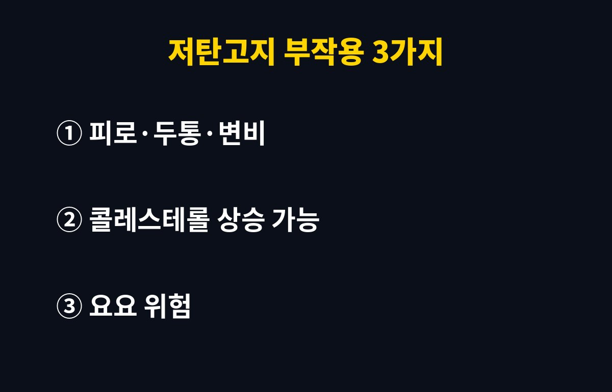
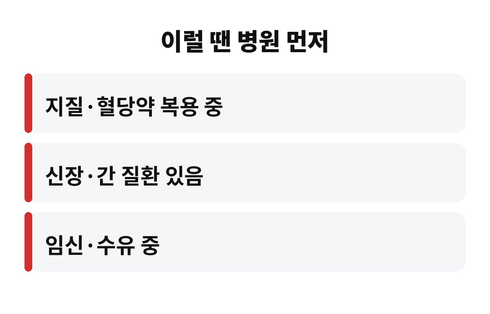

저탄고지 부작용은 크게 3가지로 볼 수 있어요. 초반의 피로·두통·변비, 콜레스테롤 수치 변화, 그리고 끊은 뒤 찾아오는 요요예요.
"밥만 줄이면 �쭉쭉 빠진다"는 말에 시작하셨다면, 내 몸은 지금 괜찮은지 궁금하시죠? 요즘 코메디닷컴 쇼츠에서도 저탄고지의 단점이 많이 본 영상으로 올라와 있어요.
탄수화물을 확 줄이면 몸이 에너지원을 포도당에서 지방으로 바꾸는 시기가 와요. 이때 두통, 어지러움, 무기력, 입 냄새 같은 증상을 겪는 분이 많아요. 흔히 '케토 독감'이라고 부르죠.
또 밥과 과일, 잡곡을 줄이면 식이섬유가 같이 줄어서 변비가 생기기 쉬워요. 수분과 전해질이 빠져나가면서 근육 경련이 오는 경우도 있고요. 물과 채소를 충분히 챙기는 게 기본이에요.
이게 제일 신경 쓰이는 부분이에요. 고지방 식단을 하다 보면 포화지방 섭취가 늘기 쉬워서, 사람에 따라 LDL(나쁜) 콜레스테롤이 올라갈 수 있다고 알려져 있어요. 삼겹살, 버터, 치즈로만 채우는 저탄고지는 특히 조심해야 해요.
같은 고지방이라도 생선, 견과류, 올리브유, 아보카도 같은 불포화지방 위주로 바꾸면 부담이 한결 덜해요. 시작 전과 몇 개월 뒤에 건강검진이나 혈액검사로 수치를 꼭 비교해 보세요.
초반에 체중이 빠르게 줄어드는 건 지방만이 아니라 수분이 같이 빠지는 영향도 커요. 그래서 다시 탄수화물을 먹기 시작하면 체중이 훅 돌아온 것처럼 보이죠.
게다가 평생 밥, 빵, 과일을 안 먹고 살 수는 없잖아요. 오래 못 지키는 식단은 결국 요요로 이어지기 쉬워요. 완전히 끊기보다 정제 탄수화물(흰쌀밥, 빵, 과자, 음료)을 줄이고 단백질과 채소를 늘리는 쪽이 현실적이에요.
아래에 해당하면 혼자 시작하지 말고 먼저 의사와 상담하는 게 안전해요.
- 당뇨약이나 혈압약, 지질 관련 약을 드시는 분
- 신장이나 간 질환이 있는 분
- 임신 중이거나 수유 중인 분
- 이전에 담낭 문제가 있었던 분
특히 당뇨약을 먹으면서 탄수화물을 갑자기 줄이면 저혈당 위험이 있어서 약 조절이 필요할 수 있어요.
정리하면 저탄고지가 무조건 나쁜 건 아니지만, 내 몸 상태와 지속 가능성을 따져봐야 한다는 거예요. 지금 하고 계신 식단에서 제일 힘든 점이 뭐였나요? 댓글로 남겨 주세요.


도움이 되셨다면 구독해 주세요. 매일 생활 건강 이슈를 쉽게 풀어 드릴게요.
※ 이 글은 일반적인 건강 정보이며 진단·치료를 대신하지 않습니다. 개인 상태에 따라 전문의와 상담하세요.